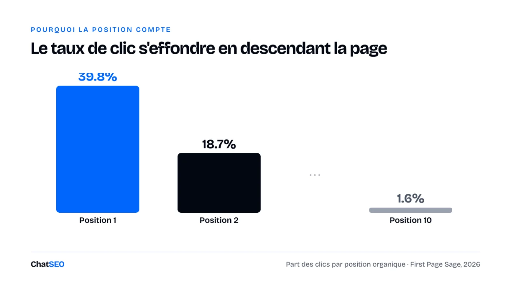
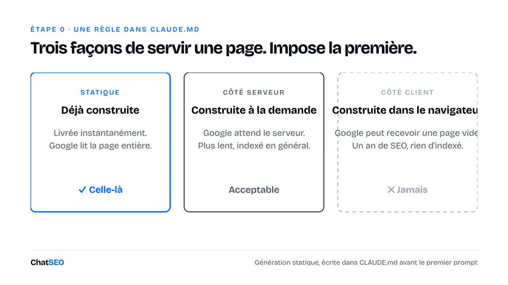
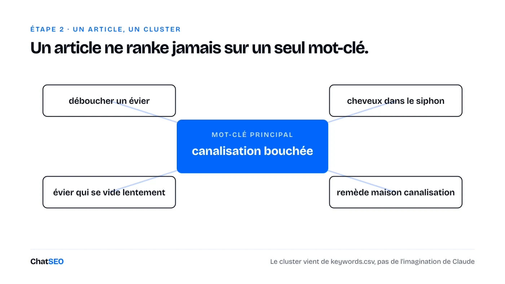
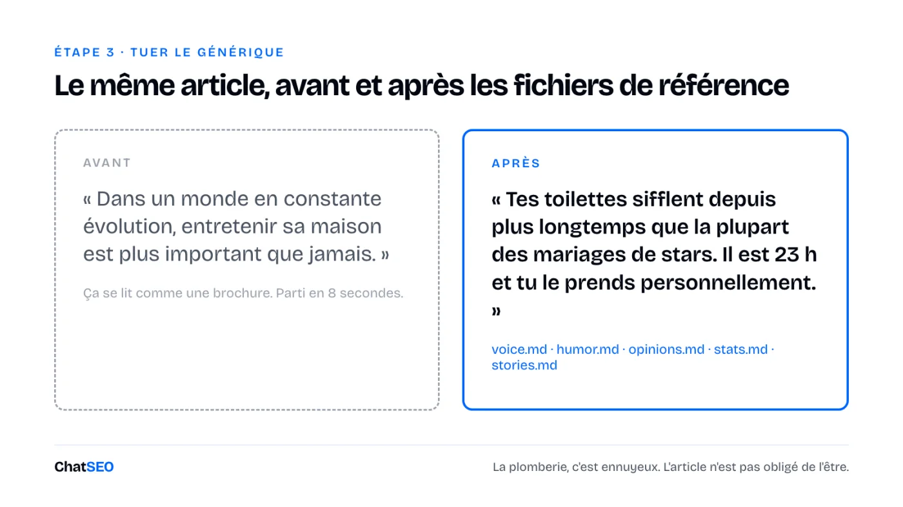
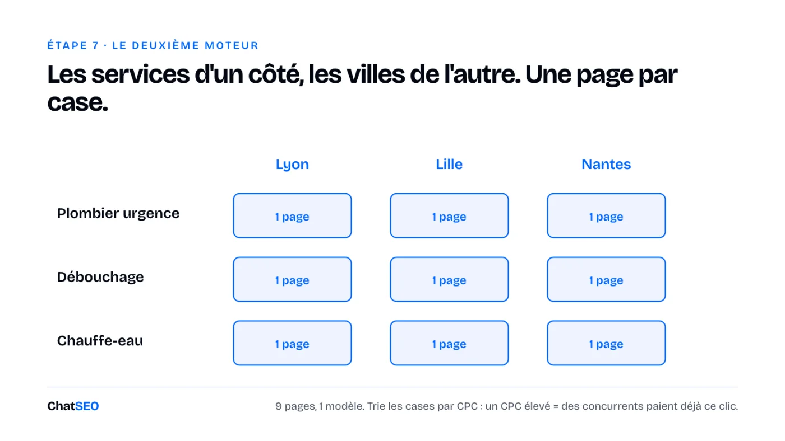
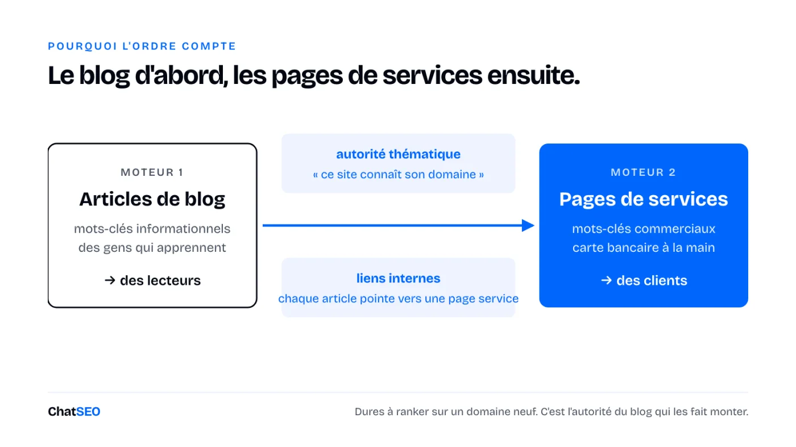

Des articles de blog à l'échelle et des pages de services, construits dans Claude Code sans écrire une ligne de code. Écrire n'est plus le goulot d'étranglement. Voici tout ce qu'il y a autour de l'écriture, étape par étape, avec chaque prompt en modèle.
12 prompts à copier, 6 schémas, zéro ligne de code. ChatSEO n'intervient qu'aux étapes où il faut des données.
Claude écrit plus vite que n'importe quelle équipe. Le goulot d'étranglement, c'est tout ce qu'il y a autour de l'écriture : choisir le bon mot-clé, rendre la page digne d'être lue, et rendre le site facile à crawler pour Google.
Voici le système complet. Deux moteurs, un site. Chaque prompt ci-dessous est un modèle : remplace ce qui est entre [CROCHETS] par ton activité et colle.
Le taux de clic s'effondre à mesure qu'on descend dans la page.
La position 1 prend entre 20 % et 40 % des clics selon les études. Le tableau 2026 de First Page Sage la place à 39,8 %, la position 2 à 18,7 %, la position 10 à 1,6 %.

Le jeu, ce n'est donc pas « être en première page ». C'est « être dans le top 3 sur des mots-clés que tu peux vraiment gagner ». C'est pour ça que ce système commence par le choix des mots-clés, pas par l'écriture.
Crée un dossier vide. Ajoute un fichier : CLAUDE.md. C'est le manuel de ton employé. Il dit à Claude comment construire, comment écrire, et ce qu'il ne doit jamais faire.
Une règle dans ce fichier compte plus que toutes les autres : la génération de site statique. Une page peut être servie de trois façons :

L'option 3, c'est comme ça qu'on passe un an à faire du SEO sans jamais être indexé. Impose l'option 1 dans CLAUDE.md. Puis un prompt :
Construis un site web pour [NOM DE TON ENTREPRISE], qui propose [TA SOLUTION] à [TON CLIENT CIBLE]. Pages : une page d'accueil, un index de blog et un index de services. Copie exactement le design de la capture d'écran jointe. Utilise la génération de site statique.
Joins une capture d'écran d'un design que tu aimes. Sans référence, tu obtiens du design IA générique. Avec une, tu obtiens quelque chose de proche du premier coup.
Claude ne connaît pas les volumes de recherche. Il ne connaît pas la difficulté. Demande-lui des mots-clés et il en invente de plausibles.
C'est l'étape où il te faut un outil avec des données. ChatSEO a les données de mots-clés, et un MCP pour que Claude Code les lise directement :
Je vends [TA SOLUTION] à [TON CLIENT CIBLE] en [TON PAYS / LANGUE]. Trouve 50 mots-clés informationnels que mes futurs clients cherchent avant d'acheter. Difficulté 30 max, 100+ recherches mensuelles. Retire les noms de marque, les noms de concurrents, et les requêtes de gens qui seraient mes concurrents plutôt que mes clients. Ajoute des mots-clés sous forme de question et des sujets amont que mes acheteurs cherchent des mois avant d'avoir besoin de moi. Regroupe-les en clusters, un mot-clé principal par cluster, et donne-moi un tableau.
Ou saute le copier-coller : branche le MCP ChatSEO dans Claude Code (plan Pro) et laisse-le écrire le fichier pour toi. Les données et le constructeur vivent dans la même session.
Utilise le MCP ChatSEO pour trouver 50 mots-clés informationnels pour [TA SOLUTION] en [TON PAYS / LANGUE] : difficulté 30 max, 100+ recherches mensuelles, pas de noms de marque ni de concurrents. Enregistre-les dans keywords.csv avec les colonnes keyword, volume, difficulty, cluster.
Un article ne ranke jamais sur un seul mot-clé. Il ranke sur des dizaines.

Prends le prochain mot-clé principal de keywords.csv qui n'a pas encore d'article de blog. Écris un article de blog pour ce mot-clé en utilisant les mots-clés de son cluster dans le même fichier. Ajoute des images libres de droits en utilisant la clé API du fichier .env.
Mets chaque clé secrète dans le fichier .env. Jamais dans le code.
Le résultat sera techniquement correct et totalement illisible. C'est normal. L'étape suivante corrige ça.
Un premier jet, quel que soit le modèle, se lit comme une brochure. Personne ne va au bout. Et des gens qui quittent ta page en 8 secondes, c'est un signal que Google voit.
Crée cinq fichiers de référence dans ton projet :
voice.md : comment tu parleshumor.md : ce qui te fait rireopinions.md : ce sur quoi tu te disputeraisstats.md : tes vrais chiffres (clients servis, années d'activité)stories.md : les anecdotes que tu racontes à chaque clientNourris-les avec tes posts LinkedIn, tes emails, tes transcripts d'appels. Si tu n'as rien, colle un auteur dont tu aimes le style et dis à Claude que c'est la référence humour.

La plomberie, c'est ennuyeux. Ton article n'est pas obligé de l'être.
Personne ne connaît l'algorithme exact. Mais les 3 premiers résultats sur ton mot-clé sont un corrigé public.
Regarde les 3 premiers résultats organiques (saute les forums et les annuaires). Fais la moyenne de leur nombre de mots, de leurs titres, de leurs images, des sous-sujets que les trois couvrent. C'est ton modèle.
Analyse les 3 premiers résultats organiques pour [TON MOT-CLÉ PRINCIPAL], hors forums et annuaires. Donne-moi leur nombre de mots moyen, leurs H2, les sous-sujets que les trois couvrent, et un angle qu'aucun ne couvre.
Réécris l'article avec cette structure et ce nombre de mots. Garde ma voix, mon humour, mes chiffres et mes anecdotes des fichiers de référence.
Reprends la structure. Bats-les sur l'angle que personne ne couvre.
La checklist est longue. L'essentiel :
Colle ta checklist dans Claude Code avec une seule consigne : applique chaque point, ne touche pas au ton. Cette consigne, c'est tout l'intérêt. Une passe SEO qui retransforme ton article en brochure vient d'annuler l'étape 3.
Si ton site tourne sur WordPress ou Shopify, ChatSEO peut auditer et appliquer ça pour toi :
Audite [URL DE TA PAGE] en SEO on-page sur le mot-clé [TON MOT-CLÉ PRINCIPAL] : H1, placement du mot-clé, liens internes et externes, FAQ, longueur du title et de la meta description. Liste les corrections et applique-les sans changer le ton.
Trois choses dont Google a besoin :
sitemap.xml : la liste de chaque page que tu veux indexerrobots.txt : ce que Google peut crawler (tout sauf ta zone d'admin)Sur une première construction, la performance est en général moyenne. Tu n'as pas besoin d'apprendre ce que veut dire « requêtes bloquant le rendu ». Lance un audit de performance, colle le rapport complet dans Claude Code :
Voici mon audit de performance : [COLLE LE RAPPORT COMPLET]. Corrige tout jusqu'à ce que les quatre catégories atteignent 100. Génère aussi robots.txt et sitemap.xml.
Pas à 100 après une passe ? Colle le nouveau rapport. Recommence. Deux ou trois boucles suffisent en général.
Les articles de blog amènent des lecteurs. Les pages de services amènent des clients.
« Comment déboucher une canalisation », c'est quelqu'un qui apprend. « Débouchage canalisation Lyon », c'est quelqu'un qui a sa carte bancaire à la main. Vois ça comme une fermeture éclair : les services d'un côté, les villes de l'autre. Chaque case est une page.

Pas d'angle local ? Remplace les villes par des secteurs ou des cas d'usage (« logiciel de facturation pour architectes »).
Pour savoir quelles cases méritent d'être construites, trie par coût par clic. Un CPC élevé veut dire que des concurrents paient ce clic en publicité. C'est un mot-clé qui rapporte.
Je vends [TES SERVICES, séparés par des virgules] à [TES VILLES / SECTEURS, séparés par des virgules]. Liste les mots-clés commerciaux au CPC le plus élevé qui combinent un de mes services avec un de ces lieux ou secteurs. Montre le volume et le CPC de chacun, et signale les combinaisons qui méritent leur propre page.
Deux règles :
Les deux moteurs ne sont pas indépendants. Les articles de blog construisent l'autorité thématique : ils disent à Google que tu connais ton domaine, et ils passent des liens internes à tes pages de services. Les pages de services sont dures à ranker sur un domaine neuf. C'est l'autorité du blog qui les fait monter.

Le blog d'abord, les pages de services ensuite. La marée soulève les bateaux.
Tout ce qui précède, c'est 30 minutes de prompts par article. Fais-le une fois, puis mets-le en bouteille.
Crée un skill appelé /blog. Il prend un mot-clé non utilisé dans keywords.csv, construit le cluster, analyse les 3 premiers résultats, écrit avec ma voix en utilisant les fichiers de référence, ajoute des images, applique la checklist on-page, et réutilise le même modèle de page optimisé.
Maintenant tu tapes /blog. Un article, entièrement optimisé. Fais pareil pour /service.
Le piège. En publier 500 le premier jour. Les règles anti-spam de Google visent explicitement le contenu produit à l'échelle pour manipuler les classements. Monte en puissance comme le ferait une vraie entreprise. Un par jour, puis deux, puis trois. Jamais mille.
Demande à Claude Code de déployer le site sur un hébergeur statique et de te guider pour le nom de domaine. Ensuite :
sitemap.xmlUne fois que les pages commencent à avoir des impressions :
Quelles pages de [TON DOMAINE] publiées ces 30 derniers jours ont des impressions mais presque aucun clic ? Propose un nouveau title et une nouvelle meta description pour chacune.
Passe en revue la fiche Google de [NOM DE TON ENTREPRISE] et dis-moi les 3 corrections qui comptent le plus pour apparaître sur « [TON SERVICE] [TA VILLE] ».
« 100 backlinks pour 5 € », ça veut dire un réseau de blogs privés. Un seul propriétaire, des milliers de domaines poubelles qui pointent vers toi. Ça peut avoir l'air génial pendant quelques mois. Puis une mise à jour tombe et le site disparaît.
Quatre méthodes qui ne portent pas ce risque :
"[TA NICHE]" "écrire pour nous"On a fait de l'off-page chez ChatSEO, méthodes propres uniquement. DR 51 en cinq mois.
À moitié vrai. Bien ranker te fait toujours citer par les moteurs IA, parce qu'ils cherchent avant de répondre.
Mais le clic rétrécit. Ahrefs a analysé 300 000 mots-clés en février 2026 : quand un AI Overview apparaît, le CTR du premier résultat chute de 58 %.
On a donc ajouté un filtre à l'étape des mots-clés : des requêtes de bas et de milieu de funnel avec une vraie intention business, et pas d'AI Overview sur la page de résultats. Si Google répond lui-même à la question, la première place vaut beaucoup moins.
Le système fait 10 étapes. La plupart des gens font l'étape 2 et s'arrêtent.
La différence entre du contenu IA générique et un site qui ranke, ce sont les étapes 1, 3 et 4 : de vraies données de mots-clés, une vraie voix, et la structure qui gagne déjà.
C'est comme ça que Paul publie 2 pages SEO par semaine sur chatseo.app. L'organique est aujourd'hui proche de notre première source de clients.
Les données de mots-clés, l'analyse de SERP, les audits et le suivi ci-dessus, c'est ce que fait ChatSEO. Utilise-le dans l'app, ou branche le MCP dans Claude Code et fais tourner toute la boucle depuis un seul terminal. 7 jours gratuits.
Commencer mon essai gratuit 7 jours →